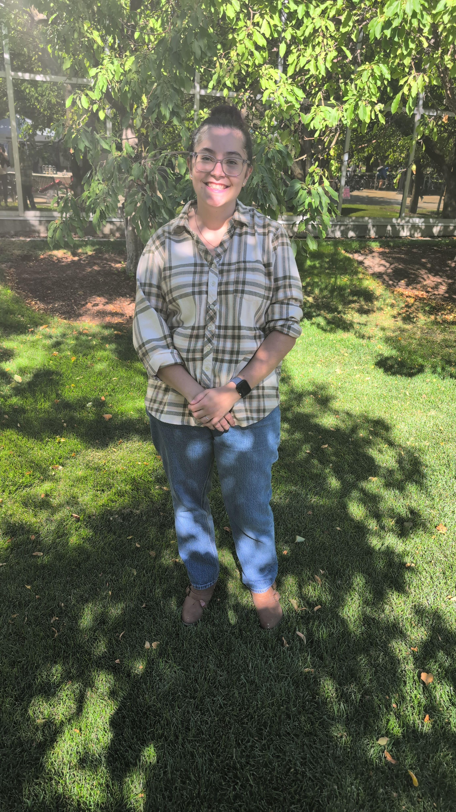

Who I am
My name is Sofia Edwards-Cardon. I grew up in the suburbs of Houston, Texas, and now live in the much cooler climate of Logan, Utah. I have a wonderful husband who followed me out to Utah 5 years ago. Together we have the sweetest little boy who inspired me to go back to college and finish my degree.
Hobbies
My number one hobby is crocheting, of course! Outside of that, I love reading romance novels, watching new shows with my husband, and attempting to learn to make every type of food from scratch.
Education and Career
After gradutating high school in Texas in 2018, I moved out to Cleveland, Ohio to go to school at Case Western Reserve University. After a year and a half at CWRU, I transferred to Utah State University to study Information Systems, a business degree not offered at CWRU. I will be gradutating in May of 2026. After graduation I am hoping to find a job that allows me to stay in Northern Utah.